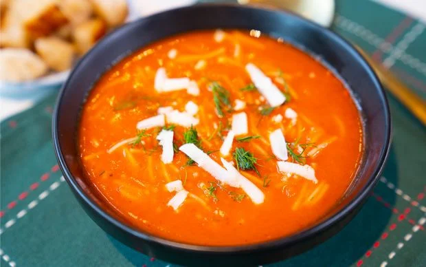

Kaşar Rendelensin: Domates Çorbası Tarifi
Havalar soğumaya başladı, yaz mevsimini hep birlikte uğurladık. Hafif hüzünlüyüz, ancak dumanı üzerinde tüten çorbalar içeceğimiz için de mutluyuz. En sevdiğiniz çorba tarifi nedir? Bizim için domates çorbasının ayrı bir yeri var diyebiliriz. Bütün yemek tariflerinin arasında yeri ayrı. Hele ki dumanı üstünde ev yapımı domates çorbası yok mu..Gelin onu güzelleyelim bir parça. Domates çorbası tarifi kaşar peynirsiz olmaz. Bazen yerini krema alabilir ama domates çorbasını özel kılan ilk kaşıkla birlikte uzayıp giden kaşar peyniridir. Onu toparlaması ve sağa sola bulaştırmadan yenilmesi ayrı bir maceradır. Kızarmış ekmek dilimleri hatta mümkünse sarımsaklı ekmekler çorbaya ayrı bir tat katar. Soğuk kış günlerinin keyfi böyle böyle çıkar. Siz de bu kolay domates çorbası tarifiyle sevdiklerinizin içini ısıtabilir; onu sandığınızdan çok daha kolay ve pratik bir şekilde yapabilirsiniz. Şimdiden afiyet olsun!
KAÇ KİŞİLİK
6 Kişilik
HAZIRLAMA SÜRESİ
30 Dakika
PİŞİRME SÜRESİ
30 Dakika